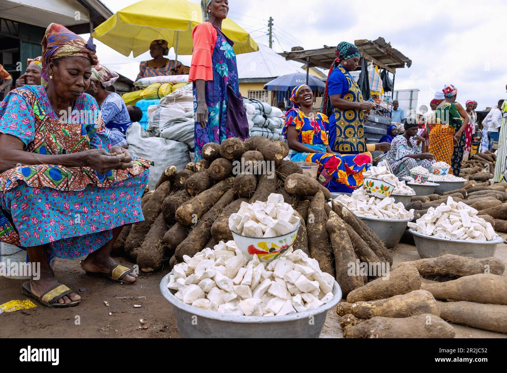
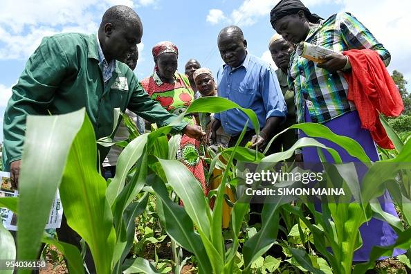
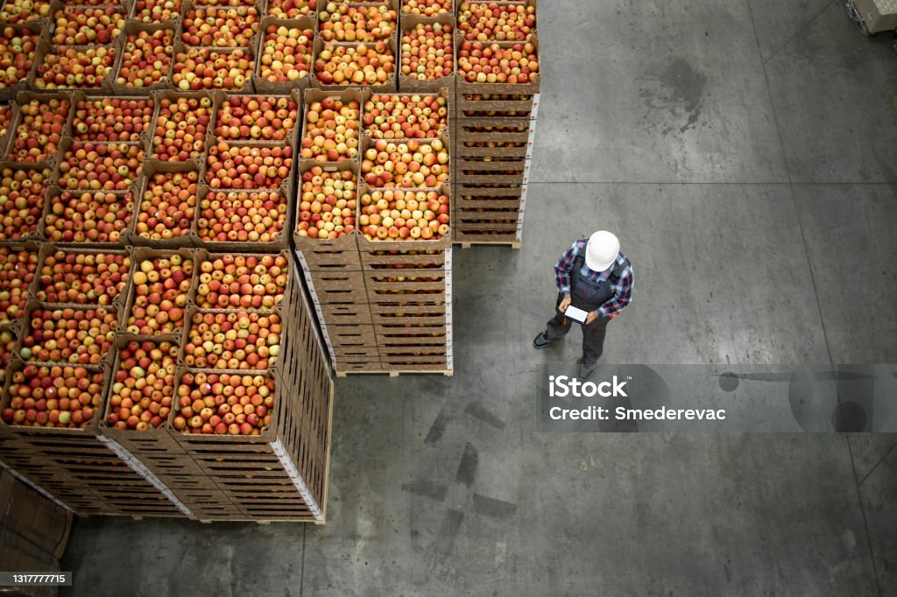
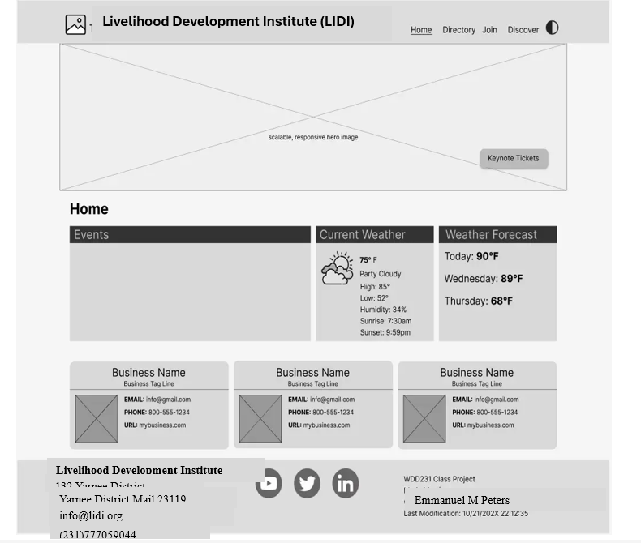

1. Site Name
Livelihood Development Institute (LIDI)
Reason for choosing this name: The name directly reflects the organization's mission — improving rural livelihoods through agricultural development. "Institute" suggests a trusted, learning-centered organization, while the acronym "LIDI" is short and memorable for branding. An optional domain could be lidi-liberia.org.
2. Site Purpose
The LIDI website serves as a hub for agribusiness in Liberia. It connects rural farmers with urban and international buyers through an e-marketplace, promotes sustainable farming practices, and provides information about LIDI's services — including farmer support, microfinance opportunities, and convenient payment options for agricultural goods.
3. Scenarios
Each scenario represents a question a target-audience visitor might ask — and shows the type of content the site must provide.
Scenario 1 — Finding Buyers
"How can I find buyers in Monrovia for my cassava and rice harvest?"
Rural farmers are looking for market access. The site must answer with an e-marketplace page, buyer listings, and contact information for LIDI's market support team.

Scenario 2 — Learning About LIDI Services
"What services does LIDI offer to help small farmers improve their yields and income?"
Smallholder farmers are exploring support options. The site must answer with an Agricultural Services page describing farmer training, sustainable agriculture, and microfinance opportunities.

Scenario 3 — Export & Payment
"Can I sell my produce to international export markets, and how do I get paid?"
farmers are ambitious looking to scale. The site must answer with information on export markets, payment methods, and LIDI's trade support services.

4. Color Scheme
The palette reflects growth, harvest, and earth — values at the heart of LIDI's mission.
| Color | Hex | Where Used |
|---|---|---|
| Deep Green | #1E5631 |
Headings, header background, footer background |
| Warm Gold | #D4A017 |
Accent color, links, buttons, section highlights |
| Light Cream | #F8F5EF |
Page background, card backgrounds |
| Charcoal | #2B2B2B |
Body text, borders |
5. Typography
- Headings: Merriweather (serif) — gives a formal, trustworthy, agricultural-institute feel.
- Body: Open Sans (sans-serif) — highly readable on screens of all sizes.
Both fonts are loaded from Google Fonts and applied throughout this document.
6. Wireframes
Black-and-white sketches showing the layout of the LIDI home page in small and larger views.
Small View (Mobile)

Larger View (Desktop)
